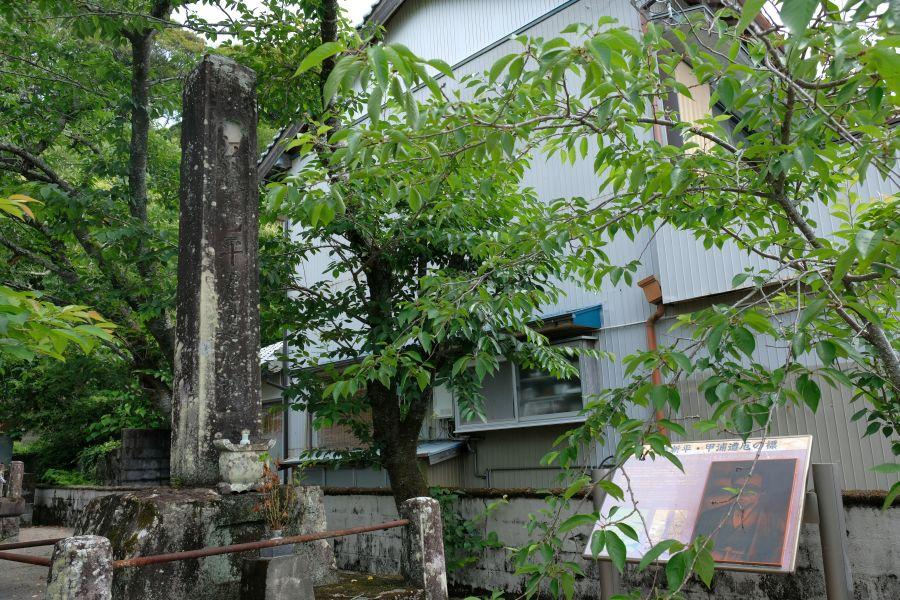
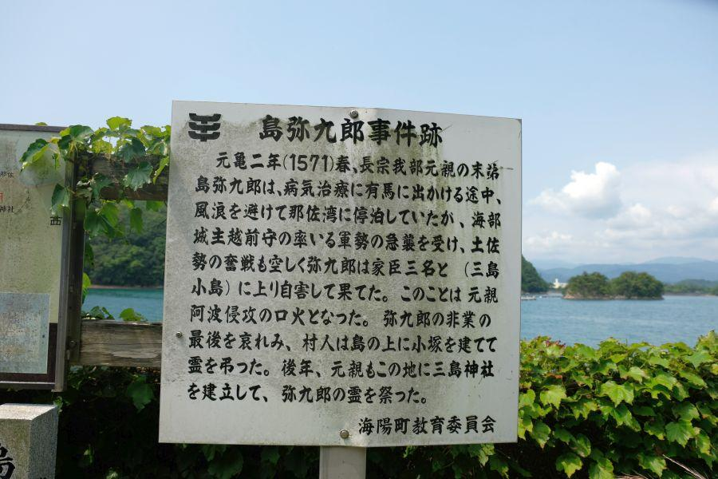

徳島県末端の高規格鉄道駅 < 海部駅 / 徳島県海陽町 >
四国を一周する鉄道はありません。西に足摺岬・東の室戸岬。どちらもその手前で鉄道が終点になっています。
しかしながら計画が無かったわけではありません。特に徳島から室戸岬を経由して高知とを結ぶ路線は、計画から実際に建設が進められました。こちらの駅では、何度も工事中断を挟みながら、なんとかここまで開通にこぎつけた事を窺い知ることが出来ます。
四国初の高架駅
海部駅(かいふえき / 徳島県海陽町)
旧海部町(かいふちょう)という規模の小さい町の駅ながら、立派な高架駅を備える。現在では四国各地で見ることができる高架駅ですが、当駅が開業した昭和48年(1973)時点では他に存在しません。建設時期が遅かったことが幸いして、海部駅は四国初の高架駅として開業しました。
阿佐線の忘れ形見
海部駅に発着している列車は、
JR四国
阿佐海岸鉄道
の二社。
前述の通り、徳島から室戸岬を経由して高知を結ぶ路線として計画された阿佐線(あさせん、阿波と土佐から)でしたが、昭和55年(1980)の国鉄再建法の成立により工事は凍結。室戸岬に鉄道が走ることはありませんでした。
ただ、この時点で路盤等が完成していた部分においては、県や沿線市町村が工事を引き継ぎ鉄道として開業している。
阿佐東線(あさとうせん)・海部(かいふ)～甲浦(かんのうら)... 阿佐海岸鉄道・平成4年(1992)開業
阿佐西線(あささいせん)・後免(ごめん)～奈半利(なはり)... 土佐くろしお鉄道 平成14年(2002)開業
※ 鉄道未開通の甲浦～奈半利間は、高知東部交通によるバスでの運行
高規格な近代駅
海部駅のプラットホームに上がってみます。
奥...甲浦(かんのうら)方面
手前...牟岐(むぎ)方面
(左)1番線...JRホーム
(右)2番線...阿佐海岸鉄道ホーム
この部分だけ切り取って見ると、非常に高規格であることがわかります。長らく終着駅だった牟岐から海部まで、延伸開業を果たしたのが昭和48年(1973)。その時代には鉄道敷設に際して踏切の設置が認められておらず、鉄道を開通させるためには高架上を走らせる必要があった。
その恩恵あって、牟岐線の延伸区間及び阿佐海岸鉄道線は限りなく直線化されており、山はトンネルで貫いているため高低差が少ない。非常に高規格なスペックを持ち合わせています。
海部駅とその周辺
JR四国規格の駅名標です。
M●●は、むぎ線
AK●●は、あさかいがん鉄道
それぞれの頭文字のアルファベットから取られているものと考察します。
JR線はここが終点。「AK29ししくい」は阿佐海岸鉄道の駅ですが、牟岐線と連続性を持たせているのか、番号が牟岐線に続くものになっています。
「M27あわかいなん」は海部川を渡るとすぐ到着。海部駅から1.5kmしか離れていません。駅の近くに海部高等学校があり、周辺では最も多い利用者があります。
現ソフトバンクホークスのクローザー・森唯斗投手は、同校の出身。他の卒業生には、阪急ブレーブスや日本ハムファイターズで監督を務めた上田利治氏。球児として甲子園にも出場、その後プロゴルファーに転向した尾崎将司選手ら。
お世辞にも大きな街と言えないこのエリアで、何人もプロスポーツ選手を輩出している土地です。
「M11阿波中島」は、昭和20年(1945)に近くの那賀川橋梁を通りがかった列車が米軍グラマン機の攻撃を受け、多数の死傷者が出た場所。
「M12阿南」までは多くの乗客があり、徳島～阿南の間は平成31年(2019)3月に行われたダイヤ改正で、日中の列車時刻を揃えたパターンダイヤが導入されました。そこから先は乗客が減り、運転される列車の本数も少なくなります。
「M21日和佐」は、四国八十八ヶ所第23番薬王寺の最寄り駅。厄除けや初詣で賑わう寺院で、正月には臨時列車が運転されます。
「M24牟岐」は同線の名称由来になった、徳島県南部の拠点となる街。
牟岐駅までは昭和17年(1942)までに順次開通しましたが、そこから先が戦争による工事中断等があり、延伸に時間がかかりました。戦争がなければ室戸岬経由の阿佐線は、全通していたかもしれません。
海部駅を発着する列車の時刻表。
これだけ見ると少ないと感じますが、同じ四国内では予土線や、土讃線の各駅停車の本数と比べると、はるかに多い。
特に甲浦方面の阿佐海岸鉄道は、一時間に二本運転される時間があり、沿線人口を考えると十分過ぎる運転本数です。
山が無いのにトンネル？不思議な光景

JRが発着する1番線から構内踏切を渡って、阿佐海岸鉄道が発着する2番線へ行ってみます。
先にあるトンネル？
町内(まちうち)トンネル
このような姿になったのは、鉄道敷設時は左から右へ山なみが続いていたためトンネルが掘られたものの、その後の宅地造成によって山が削られ、構造体のみが残された不思議なトンネルになったようです。この特異な姿はバラエティ番組等でたびたび取り上げられています。
阿佐海岸鉄道式のホーム
2番線にある駅名標は、阿佐海岸鉄道の書式。3駅しか存在しないので貴重です。
駅名の横に描かれているイラストは、母川(ははがわ)に生息する「ホタル」「大ウナギ」
近くを流れる海部川の支流・母川は古くから大ウナギが棲息することが知られている川。数年前まで近くのショッピングセンター・ピアカイフの敷地内に大ウナギの水族館がありました。閉館になり、大ウナギたちは近くの宿泊施設・遊遊NASAへ引っ越し。展示されています。
阿佐海岸鉄道の時刻表や、料金表などの掲示物。
全三駅の運転区間のうち、海部駅から宍喰駅(ししくいえき)は約7分。宍喰駅から甲浦駅(かんのうらえき)は約4分。本当に小さな小さな鉄道です。
阿佐海岸鉄道の将来
阿佐海岸鉄道・阿佐東線の起点を示す「0km」ポストが2番線ホームの下にありました。
阿佐海岸鉄道を取り巻く経営環境は非常に厳しく、平成4年(1992)の開業以来、補助金等を除けば一度も黒字を計上出来ていません。
鉄道の収支を表すものに「営業係数」というものがありますが、阿佐東線は2011年は「916」。100yenの収入を得るために916yen必要ということになります(東京の山手線は50台)。この数値は全国最低。
頼みの綱である通学需要も少子高齢化で統廃合が進んでおり、先述の海部高校頼み。もはや同社の筆頭株主である徳島県の意地で存続していると言って良く、これからの「あさてつ」の未来は極めて不透明です。四国の鉄道旅を計画されている方は、できるだけ早く乗りに来ることをお勧めします。
海部駅
< 自家用車 >
高松駅から 約3時間、145km
徳島阿波おどり空港から 約2時間10分、88km
< 公共交通機関 >
JR牟岐線線海部駅
※ 主な地点からの最速・最短距離
近隣・関連記事

2018,8/28 列車を下りたら、徒歩0分で海水浴。夏だけの臨時駅 < 田井ノ浜駅 / 徳島県美波町 >

2018,11/14 終戦間際に発生した列車空襲事件 < 那賀川橋りょう / 徳島県阿南市 >

2018,12/8 ユニークな駅名の高知県の鉄道交通中心地 < 後免駅 / 高知県南国市 >

2018,12/26 国の将来を憂い殉じた二十三名の志士たちの墓所 < 二十三士墓所・福田寺 / 高知県田野町 >

2019,1/1 雄大な太平洋を存分に楽しむことができるローカル線・前編 < ごめん・なはり線 / 高知県東部 >

2019,1/7 雄大な太平洋を存分に楽しむことができるローカル線・後編 < ごめん・なはり線 / 高知県東部 >

2019,6/30 日本最古のコンクリート製トンネル < 松坂隧道 / 徳島県牟岐町 >

2019,7/6 江戸を東京と改めた男の最期の地 < 江藤新平遭厄記念碑 / 高知県東洋町 >

2019,7/12 土佐の長宗我部元親、他國侵攻の契機となった事件 < 島弥九郎事件 / 徳島県海陽町 >